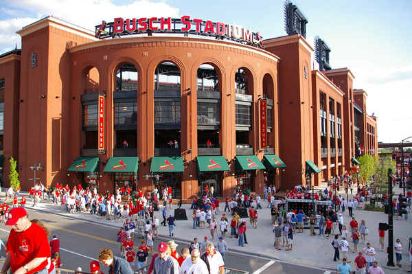
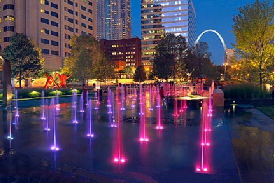

Find out about all the great things that are happening in and around our city of Saint Louis. New blog posts and event listings are updated everyday so you can never miss a beat! Anyone can upload an event or some fun photos and blog posts!
Find out more
share events or posts
Saint Louis Botanical Gardens
Explore the Gardens

Busch Stadium
Lake Tahoe is full of wonderful places to stay. You have the ability to sleep in the outdoors in a tent, or relax like a king at a five star resort. Here are our top three resorts:

Light the city
One of most important things when it comes to traveling through the great outdoors is packing accordingly. Here are a few tips:
Visit and Explore
- discover
- See and Do
- Eat and Drink
- Stay
- Events
- Travel Tools
- Fun Suggestions
- 21 and Over
5 Things To Do This
Weekend in St. Louis
2/26-2/28
Happy Friday! The following action-packed weekend events are sure to give you a thrill including the St. Louis Boat and Sportshow, performances, exhibits and more. As always, you can check out our events calendar for more fun things do in...
See All Posts >


{kind=link}